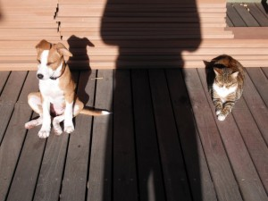

Dog takes on Human stuff,Training
28 September 2011 | Comments Off

Roxy!
So, following on from our “Let’s go to Pinelands” thing, we, um, didn’t. Well, we did. But then we didn’t.
We did the flyball there for a while, dipping out after a few weeks. The trainer was lovely, but the other handlers kind of put us off. We looked at them and thought: you’re taking this a little bit too seriously, you know that? And we were worried we would become like them. And, to be honest, we weren’t interested in doing the competition stuff, and it’s all kind of geared towards that/
While were Balling (yo) we spied on the classes. Despite my “needs structure” light complaints before, this pushed it a bit too far. The trainers were shouting at the handlers. It was like watching a drill sergeant and the new recruits. It didn’t look fun for the humans or the dogs. So we decided it was not for us.
A few days after that, I got an SMS from the lovely Newlands lady asking if we’d be interested in more classes. We said hell yes! The vibe is so much nicer. We go to have fun and learn stuff, and we do.
Last night I went on a photo mission for a certain food blog. Roxy tried to help, thusly:

Dog takes on Human stuff,Photos
30 September 2010 | Comments Off
RoxBox demonstrating her new look, The Windswept Ears:

Paws (oh ho) for quiet reflection:

Morning sun worshippers. Some more, ahem, refined than others.

Dog takes on Human stuff,Playtime,Training
17 August 2010 | 2 Comments
New favourite toy: ice cube (the solid water, not the rapper)!
It slides!
It wets!
It… um… is lickable!
In other news: training is progressing at a leisurely pace.
She’s a bit too young for proper book learning, ayup, but she’s sitting and coming and sometimes staying, so us puppy parents are proper proud of our pstudent.
At the moment, she’s all depressed and is hiding in her kennel*. 
This is because today is Collar Day.
As in: it goes on and it stays on.
______________________________
* – the kennel has now been roofed. Yes, it is still inside. Yes, it is still next to the bed. No, it will not stay there forever. Yes, we are going to move it a little each day until it’s in its actual spot. Thank you for your attention. End transmission.
Dog takes on Human stuff
13 August 2010 | Comments Off
Hip hop on the hifi.
The speakers are quite far apart, so the stereo is quite effective.
You have to keep switching your view from one speaker to the other.
Also, you have to look for the voices.
Which must be behind the hifi.
Or in the hallway.
Cute.
Word.


{kind=link}